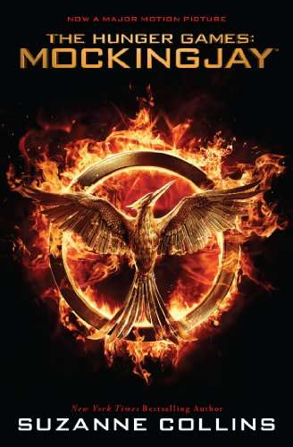

Welcome
Hi! Thanks for visiting my website. Here’s a picture of me with a rat in Central Park. If you’ve read my fantasy series, The Underland Chronicles, you will have a clue as to why I chose this photo. If not, you may want to click around and find out a little more about my books. Or visit the Scholastic website for cool games and info!

Mockingjay Movie Tie-In

#1 USA Today Bestseller
#1 New York Times Bestseller
#1 Wall Street Journal Bestseller
#1 Publishers Weekly Bestseller
A New York Times Notable Children's Book of 2010
A New York Times Book Review Editors' Choice
A 2010 Booklist Editors' Choice
A 2010 Kirkus Best Book of the Year
A Publishers Weekly Best Book of 2010
An NPR Best Book of 2010
“This concluding volume in Collins's Hunger Games trilogy accomplishes a rare feat, the last installment being the best yet, a beautifully orchestrated and intelligent novel that succeeds on every level."
--Publishers Weekly,STARRED REVIEW
“...readers will instinctively understand what Katniss knows in her soul, that war mixes all the slogans and justifications, the deceptions and plans, the causes and ideals into an unsavory stew whose taste brings madness. That there is still a human spirit that yearns for good is the book’s primrose of hope."
--Booklist,STARRED REVIEW
“In the final analysis, this is exactly the book its fans have been hoping for. It will grab them and not let go, and if it leaves them with questions, well, then, it’s probably exactly the book Collins was hoping for, too."
--Kirkus,STARRED REVIEW